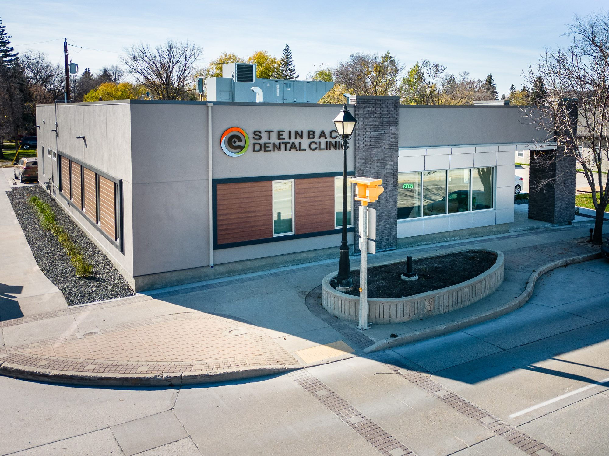
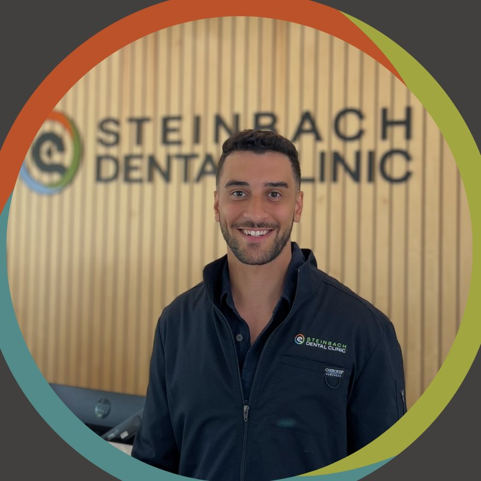

Braces and aligners. No drive to Winnipeg.
Three of our dentists trained in orthodontics: braces, Invisalign, SureSmile, and early treatment, all on Main Street.


Who is it for
Children, age 7 to 10
Early interceptive treatment can make room in a growing jaw and avoid extractions later.
Teens
Fixed braces or clear aligners, fitted and monitored here through every stage.
Adults
Invisalign and SureSmile, plus retainers to hold the result.
Jaw pain
TMJ and myofunctional treatment for jaw joint issues and bite problems.
Your options
Fixed braces
Traditional braces for kids, teens, and adults, including complex bite corrections.
Invisalign and clear aligners
A clear, removable option for teens and adults who want straightening without metal.
SureSmile
Guided clear aligner treatment, planned and adjusted here in the clinic.
Early treatment and appliances
Interceptive orthopedic appliances for growing jaws, before braces are even needed.
Retainers and TMJ
Retainers to hold your result, and myofunctional treatment for jaw joint pain.
Three dentists trained in orthodontics
Dr. Kevin Friesen
Functional and myofunctional orthodontics, TMJ
DMD, University of Manitoba (2000). Member of the International Association for Orthodontics, plus the Manitoba and Canadian Dental Associations. Born and raised in Steinbach.
Dr. Bruce Cypurda
Orthodontics
DMD, University of Manitoba (1986), with completed I.O.A. orthodontic training. Practice partner since 2008 and recognized by the American Academy of Oral Medicine.
Dr. Catherine Carroll
Early interceptive and myofunctional orthodontics
DMD, University of Manitoba (2010), with a BSc in Genetics. Practices preventative and restorative dentistry alongside early orthopedic treatment. Speaks English, French, and conversational Spanish.
Smile stories
Severe upper crowding, treated in 16 months with a removable upper appliance and braces. No teeth removed.
A deep overbite with jaw joint issues, corrected within 18 months combining orthopedic appliances and braces.
An underbite from an overdeveloped lower jaw and an impacted upper canine with no room to erupt. The patient declined jaw surgery, so the upper jaw was developed with a three-way expansion appliance and braces, plus a simple procedure to let the canine come through.
Results vary. Every case is planned individually.
Questions we hear
When should a child first be checked for braces?
Around age 7 to 10, while the jaw is still growing. Early treatment can create room and sometimes avoid extractions later, but not every child needs it. A consultation tells you where things stand.
Do I need a referral?
No. Book a consultation directly, whether you're a new patient or already part of the clinic.
How long does treatment take?
It depends on the case. The cases in our smile gallery ran 16 to 18 months; a simpler or more complex bite can run shorter or longer.
Do you offer Invisalign?
Yes, along with SureSmile clear aligners. Both are options we'll walk through at your consultation, alongside fixed braces.
What does it cost?
Our fees follow the Manitoba fee guide. A consultation gives you a written plan and price before you commit to anything.